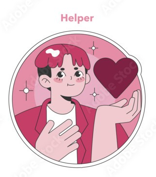
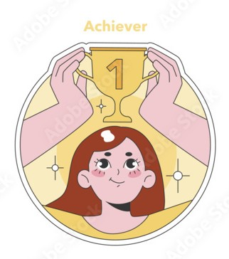
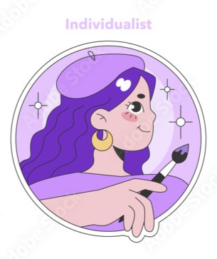
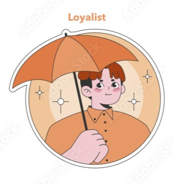
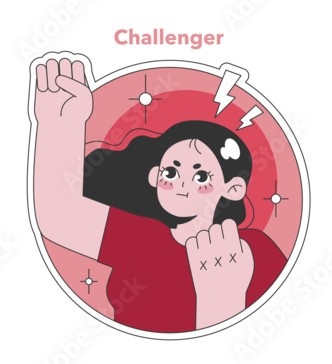
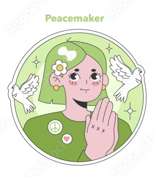

Each person in the world possesses an enneagram type which defines their unique qualities and how they interact with the world.
Learn the qualities of each enneagram type and discover your own by reading the content below!
The Enneagram is a system of personality typing that describes patterns in how people interpret the world and manage their emotions. There are nine Enneagram Personality Types, each of which has their own key motivations and fears that largely guide their actions and decisions. Understanding your primary type can be a powerful tool for self knowledge and improvement in all areas of your life, both at home and in the workplace.

| Intelligence Type | Nature |
|---|---|
| Heart Types | Individuals who depend on emotional intelligence. |
| Head Types | Individuals who depend on intellectual intelligence. |
| Body Types | Individuals who depend on instinctual intelligence (gut feeling/intuition) |






Also known as The Perfectionist Type Ones are often regarded as the rule-followers among the Enneagram types. They place a strong emphasis on doing things correctly and maintaining high standards in their actions and decisions. Because they have a deep concern about making mistakes or being imperfect, they tend to develop a strong sense of responsibility and discipline. As a result, they often establish clear rules, structures, and routines for themselves in order to maintain order and integrity. This commitment to correctness and improvement can also extend to their expectations of others, leading them to encourage those around them to follow established standards and principles as well.
Individuals of this type place great importance on being liked and valued by others. They often seek meaningful ways to be helpful, supportive, and useful to the people around them, believing that contributing to others' well-being strengthens their sense of belonging. By offering assistance, care, and encouragement, they aim to build strong and positive relationships. Underlying these behaviors is a deep emotional concern about being unwanted or unlovable. As a result, they may work hard to maintain harmony and ensure that others feel supported, sometimes prioritizing the needs of others in order to preserve connection and acceptance.
Individuals of this type are strongly motivated by a desire to achieve success and earn the admiration of others. They often place significant importance on their accomplishments and work diligently to present themselves in a positive and impressive manner. Because they are highly aware of how others perceive them, they tend to be conscious of their public image and strive to maintain a reputation of competence and capability. Underlying this drive is a deep fear of failure and of not being recognized as valuable or worthy. As a result, they are often goal-oriented, ambitious, and determined to demonstrate their abilities through measurable achievements.
Individuals of this type often desire to express a strong sense of individuality and uniqueness. They are drawn to experiencing deep, authentic emotions and value personal meaning and self-expression. Because they place great importance on understanding their inner world, they may spend considerable time reflecting on their feelings and personal identity. At the same time, they may struggle with a fear of being fundamentally flawed or lacking in some way. This concern can lead them to focus heavily on how they differ from others, sometimes emphasizing their distinctiveness in an effort to better understand themselves and affirm their sense of identity.
Individuals of this type are strongly motivated by a desire to understand the world through knowledge and careful observation. They are often drawn to studying ideas, gathering information, and analyzing complex concepts. Working with data, theories, and systems tends to feel more natural and comfortable for them than frequent social interaction. Because they value independence and mental clarity, they often prefer environments that allow them to think deeply and work autonomously. Underlying this tendency is a fear of being overwhelmed, whether by their own needs or by the demands of others. As a result, they may establish personal boundaries and conserve their time and energy in order to maintain a sense of control and self-sufficiency.
Individuals of this type are typically motivated by a strong desire for security and stability. They are naturally vigilant and tend to anticipate potential challenges or problems, often taking proactive steps to prepare for them. This careful planning and foresight help them feel more confident in navigating uncertain situations. At the core of their behavior is a deep-seated fear of being unprepared or vulnerable, and of being unable to protect themselves from harm or danger. Consequently, they often value loyalty, guidance, and support from trusted people or systems, using these resources to enhance their sense of safety and readiness.
Individuals of this type are naturally drawn to fun, excitement, and new experiences. They thrive on variety and adventure, often seeking out activities that stimulate their curiosity and keep life engaging. Because they are easily bored, they tend to pursue multiple interests simultaneously and enjoy exploring different possibilities. At a deeper level, they fear experiencing emotional pain or discomfort, which motivates them to avoid difficult feelings whenever possible. To manage this fear, they often keep themselves busy, focusing on pleasurable or stimulating pursuits as a way to maintain a sense of positivity and emotional safety.
Individuals of this type are typically motivated by a strong desire for security and stability. They are naturally vigilant and tend to anticipate potential challenges or problems, often taking proactive steps to prepare for them. This careful planning and foresight help them feel more confident in navigating uncertain situations. At the core of their behavior is a deep-seated fear of being unprepared or vulnerable, and of being unable to protect themselves from harm or danger. Consequently, they often value loyalty, guidance, and support from trusted people or systems, using these resources to enhance their sense of safety and readiness.
Individuals of this type are often characterized by a calm, easygoing nature and a tendency to “go with the flow.” They usually prefer harmony and may allow others to set agendas or make decisions in order to avoid conflict. At their core is a fear of alienating or upsetting others by asserting their own needs and desires. As a result, they often adopt a passive approach, prioritizing the comfort and preferences of those around them over their own. This inclination toward accommodation helps them maintain peace and connection, but can sometimes lead them to suppress their own priorities or delay taking decisive action.
In order for individuals with different enneagram types to fully grow and become the greatest version of themselves, they should learn how to take care of themselves.
Below are some tips on how to maintain a healthy relationship with yourself depending on your enneagram type.
| Enneagram Type | Self Care Tips |
|---|---|
| Type 1 | Make it a priority to incorporate regular rest into your daily routine, even during busy or hectic days, to maintain your well-being and energy. |
| Type 2 | Practice self-care by showing yourself the same compassion you offer others, while also setting and maintaining healthy personal boundaries. |
| Type 3 | Take time to step away from work and nurture emotional connections with loved ones, allowing yourself to focus on your feelings and authentic needs as a key form of self care. |
| Type 4 | Discipline and structure make a difference in their lives. Shifting focus from motivation to discipline and recognizing the importance of consistency is the best way for type fours to take care of themselves and prevent long term emotional burnout. |
| Type 5 | Enhancing body awareness, limiting information intake, and taking small social steps toward connecting with others is the best self care for type fives. |
| Type 6 | Be kind to yourself, practice grounding techniques regularly, and focus on building reliable support systems to take care of your well being. |
| Type 7 | Practice slow living, pay attention to your feelings, and introduce more structure into your life based on an understanding of your needs and emotions. |
| Type 8 | Learn to take a break from tough mode. Spending time cuddling a pet, playing with children, or sharing tenderness with a loved one are effective ways to soften your exterior and care for yourself. |
| Type 9 | Practice self care by cultivating assertiveness. Try setting a goal to express at least one opinion or preference each day. |